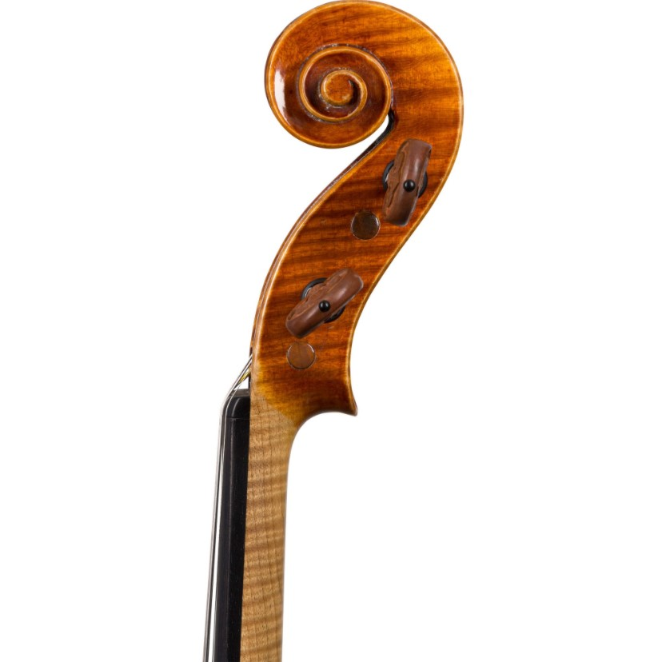
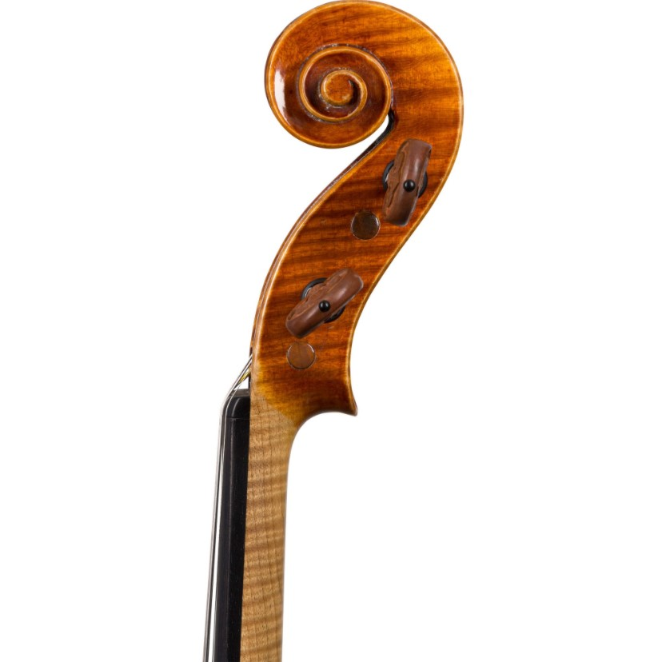

Heinrich Th Heberlein Jr Violin, Germany, 1934
$10.000
Paul Knorr, born in 1882, studied violinmaking with Dolling. Working in Berlin and Breslau, he established himself in the Markneukirchen workshop of F & R Enders in 1918. Starting in 1921, Knorr became and independent maker. Attaining mastery of his craft, Knorr was highly respected for wood and material selection. He was also adept at following the patterns, approach, and varnishing techniques of the Cremonese masters.